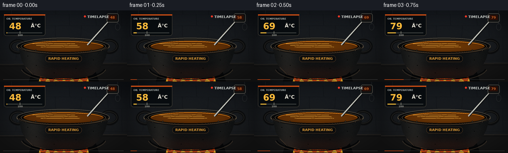
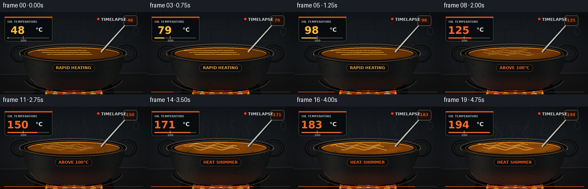
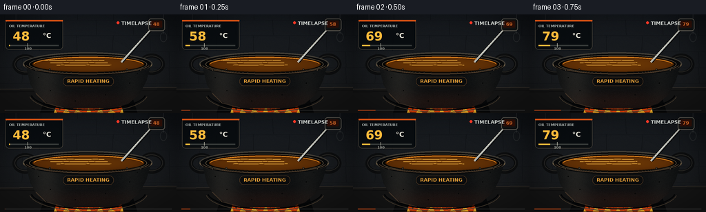

CODING AGENTS AS PIXEL WORLD MODELS
traex/GPT-5.6-Sol · phygen_110
点击播放 · 原生 RGB 像素
逐轮保存的候选
回放视频、检查图与代码变化。
每份候选均可单独播放。实际图片检查记录在下方工具轨迹中。
候选 01播放与检查图
点击播放 · 原生 RGB 像素

展开代码变化
--- 上一保存版本
+++ 本次保存版本
@@ -0,0 +1,341 @@
+from pathlib import Path
+import math
+
+import numpy as np
+from PIL import Image, ImageDraw, ImageFilter, ImageFont
+
+import artifact_io
+
+
+CASE_DIR = Path(__file__).resolve().parent
+W, H, N = 256, 144, 20
+S = 3 # render large, then downsample for clean edges
+RW, RH = W * S, H * S
+RNG = np.random.default_rng(110)
+
+
+def font(size, bold=False):
+ name = "DejaVuSans-Bold.ttf" if bold else "DejaVuSans.ttf"
+ paths = [
+ Path("/usr/share/fonts/truetype/dejavu") / name,
+ Path("/usr/share/fonts/dejavu") / name,
+ ]
+ for p in paths:
+ if p.exists():
+ return ImageFont.truetype(str(p), size * S)
+ return ImageFont.load_default()
+
+
+F_TINY = font(5, True)
+F_SMALL = font(7, True)
+F_MED = font(10, True)
+F_TEMP = font(18, True)
+
+
+def sc(v):
+ if isinstance(v, (tuple, list)):
+ return tuple(int(round(x * S)) for x in v)
+ return int(round(v * S))
+
+
+def smoothstep(a, b, x):
+ if a == b:
+ return float(x >= b)
+ q = np.clip((x - a) / (b - a), 0.0, 1.0)
+ return q * q * (3.0 - 2.0 * q)
+
+
+def rounded(draw, box, radius, fill, outline=None, width=1):
+ draw.rounded_rectangle(sc(box), radius=sc(radius), fill=fill,
+ outline=outline, width=sc(width))
+
+
+def path_points(points):
+ return [(int(x * S), int(y * S)) for x, y in points]
+
+
+def add_glow(base, center, radius, color, strength):
+ yy, xx = np.mgrid[0:RH, 0:RW]
+ cx, cy = center[0] * S, center[1] * S
+ r = np.sqrt((xx - cx) ** 2 + (yy - cy) ** 2) / (radius * S)
+ alpha = np.clip(1.0 - r, 0, 1) ** 2 * strength
+ arr = np.asarray(base).astype(np.float32)
+ col = np.array(color, dtype=np.float32)
+ arr = arr * (1 - alpha[..., None]) + col * alpha[..., None]
+ return Image.fromarray(np.uint8(np.clip(arr, 0, 255)), "RGB")
+
+
+def make_background():
+ yy, xx = np.mgrid[0:RH, 0:RW]
+ y = yy / max(1, RH - 1)
+ x = xx / max(1, RW - 1)
+ # Cool charcoal stone kitchen, with a subtle central pool of light.
+ radial = np.clip(1 - np.sqrt(((x - .5) / .66) ** 2 + ((y - .42) / .88) ** 2), 0, 1)
+ arr = np.zeros((RH, RW, 3), np.float32)
+ arr[..., 0] = 13 + 18 * radial + 9 * y
+ arr[..., 1] = 16 + 20 * radial + 7 * y
+ arr[..., 2] = 20 + 22 * radial + 4 * y
+ noise = RNG.normal(0, 1.5, (RH, RW, 1))
+ arr += noise
+ bg = Image.fromarray(np.uint8(np.clip(arr, 0, 255)), "RGB")
+ d = ImageDraw.Draw(bg, "RGBA")
+
+ # Uneven masonry. The low contrast keeps attention on the oil.
+ mortar = (9, 11, 14, 120)
+ for y0 in (8, 30, 53, 77, 100):
+ d.line(path_points([(0, y0), (256, y0 + .7)]), fill=mortar, width=sc(.7))
+ offset = 0 if (y0 // 20) % 2 else 25
+ for x0 in range(-20 + offset, 276, 53):
+ d.line(path_points([(x0, y0 - 22), (x0 + RNG.uniform(-2, 2), y0)]),
+ fill=mortar, width=sc(.7))
+ # Back-wall soot halo.
+ soot = Image.new("RGBA", (RW, RH), (0, 0, 0, 0))
+ sd = ImageDraw.Draw(soot)
+ sd.ellipse(sc((61, 18, 200, 132)), fill=(0, 0, 0, 80))
+ soot = soot.filter(ImageFilter.GaussianBlur(sc(22)))
+ bg = Image.alpha_composite(bg.convert("RGBA"), soot).convert("RGB")
+ d = ImageDraw.Draw(bg, "RGBA")
+ # Stone hearth slab.
+ d.polygon(path_points([(0, 109), (256, 106), (256, 144), (0, 144)]), fill=(22, 22, 22, 255))
+ d.line(path_points([(0, 109), (256, 106)]), fill=(74, 65, 55, 180), width=sc(1))
+ d.line(path_points([(0, 113), (256, 110)]), fill=(8, 8, 9, 180), width=sc(1))
+ # A few distant hanging utensils.
+ d.line(path_points([(237, 0), (237, 28)]), fill=(74, 77, 78, 100), width=sc(1))
+ d.ellipse(sc((232, 26, 242, 40)), outline=(71, 74, 74, 95), width=sc(1))
+ d.line(path_points([(23, 0), (23, 23), (18, 30)]), fill=(67, 69, 69, 75), width=sc(1))
+ return bg
+
+
+BACKGROUND = make_background()
+
+
+def draw_flames(img, t, frame):
+ # Fire and its diffuse underglow sit behind the cauldron body.
+ heat = .35 + .65 * smoothstep(.05, .72, t)
+ img = add_glow(img, (128, 131), 65, (216, 65, 7), .18 + .24 * heat)
+ glow = Image.new("RGBA", (RW, RH), (0, 0, 0, 0))
+ gd = ImageDraw.Draw(glow, "RGBA")
+ gd.ellipse(sc((72, 121, 186, 151)), fill=(255, 67, 5, int(80 + 55 * heat)))
+ glow = glow.filter(ImageFilter.GaussianBlur(sc(8)))
+ img = Image.alpha_composite(img.convert("RGBA"), glow).convert("RGB")
+
+ d = ImageDraw.Draw(img, "RGBA")
+ # Deterministic flicker with distinctly rising flame height.
+ for j, cx in enumerate([79, 96, 113, 129, 145, 162, 178]):
+ flicker = math.sin(frame * 1.73 + j * 2.11)
+ h = (7 + 9 * heat) * (.76 + .22 * flicker)
+ w = 8 + (j % 3) * 2
+ outer = [(cx - w, 142), (cx - w * .7, 135), (cx - 2, 128),
+ (cx + flicker * 2, 142 - h), (cx + 3, 131), (cx + w, 142)]
+ d.polygon(path_points(outer), fill=(246, 70, 5, 210))
+ inner_h = h * .58
+ inner = [(cx - w * .42, 143), (cx - 1, 137),
+ (cx + 1 + flicker, 143 - inner_h), (cx + w * .45, 143)]
+ d.polygon(path_points(inner), fill=(255, 198, 45, 235))
+ return img
+
+
+def draw_cauldron(img, t, frame):
+ d = ImageDraw.Draw(img, "RGBA")
+ # Feet and heavy side handles.
+ d.polygon(path_points([(65, 123), (83, 126), (78, 143), (58, 143)]), fill=(9, 10, 11, 255))
+ d.polygon(path_points([(174, 125), (192, 121), (199, 143), (179, 143)]), fill=(8, 9, 10, 255))
+ d.ellipse(sc((18, 58, 55, 88)), outline=(13, 14, 15, 255), width=sc(6))
+ d.ellipse(sc((201, 57, 239, 88)), outline=(13, 14, 15, 255), width=sc(6))
+ d.ellipse(sc((21, 61, 53, 84)), outline=(58, 56, 51, 170), width=sc(1))
+ d.ellipse(sc((203, 60, 236, 84)), outline=(57, 54, 48, 170), width=sc(1))
+
+ # Curved cast-iron vessel body as a textured masked gradient.
+ body_pts = [(37, 68), (39, 82), (44, 102), (54, 119), (70, 130),
+ (92, 137), (164, 137), (186, 130), (202, 116), (212, 97),
+ (218, 76), (217, 67)]
+ mask = Image.new("L", (RW, RH), 0)
+ ImageDraw.Draw(mask).polygon(path_points(body_pts), fill=255)
+ yy, xx = np.mgrid[0:RH, 0:RW]
+ xf, yf = xx / S, yy / S
+ edge_light = 19 * np.exp(-((xf - 66) / 23) ** 2) + 8 * np.exp(-((xf - 191) / 18) ** 2)
+ fire_reflect = (15 + 28 * t) * np.exp(-((yf - 129) / 15) ** 2) * np.exp(-((xf - 130) / 82) ** 2)
+ n = RNG.normal(0, 2.6, (RH, RW))
+ body = np.empty((RH, RW, 4), np.uint8)
+ body[..., 0] = np.clip(14 + edge_light + fire_reflect * 1.0 + n, 0, 255)
+ body[..., 1] = np.clip(16 + edge_light * .9 + fire_reflect * .29 + n, 0, 255)
+ body[..., 2] = np.clip(17 + edge_light * .76 + fire_reflect * .08 + n, 0, 255)
+ body[..., 3] = np.asarray(mask)
+ img = Image.alpha_composite(img.convert("RGBA"), Image.fromarray(body, "RGBA"))
+ d = ImageDraw.Draw(img, "RGBA")
+ # Cast bands, highlights, pitting and rivets.
+ d.arc(sc((42, 89, 214, 143)), 8, 172, fill=(78, 65, 50, 100), width=sc(1))
+ d.arc(sc((44, 90, 212, 140)), 8, 172, fill=(4, 5, 6, 170), width=sc(2))
+ d.line(path_points([(52, 115), (66, 129), (92, 136)]), fill=(73, 58, 44, 70), width=sc(1))
+ for x, y, r in [(56, 92, .8), (73, 111, .6), (188, 100, .7), (109, 126, .6),
+ (153, 117, .8), (199, 86, .5), (88, 84, .5)]:
+ d.ellipse(sc((x-r, y-r, x+r, y+r)), fill=(3, 4, 4, 175))
+
+ # Thick rim: rear lip, inner cavity, then animated oil.
+ d.ellipse(sc((33, 55, 221, 89)), fill=(8, 9, 10, 255), outline=(65, 61, 53, 255), width=sc(2))
+ d.ellipse(sc((42, 59, 213, 86)), fill=(3, 4, 4, 255), outline=(91, 80, 62, 175), width=sc(1))
+
+ # Oil texture in an ellipse. It brightens and develops moving convection
+ # bands as viscosity falls, while deliberately avoiding a water-like boil.
+ oilmask = Image.new("L", (RW, RH), 0)
+ ImageDraw.Draw(oilmask).ellipse(sc((47, 61, 209, 84)), fill=255)
+ om = np.asarray(oilmask).astype(np.float32) / 255
+ cx, cy, rx, ry = 128.0, 72.5, 81.0, 11.5
+ q = ((xf-cx)/rx)**2 + ((yf-cy)/ry)**2
+ level = smoothstep(.12, .68, t)
+ convection = (np.sin((xf-cx)*.085 + (yf-cy)*.43 + frame*.53) +
+ .55*np.sin((xf+2*yf)*.12 - frame*.71))
+ broad = np.sin(np.sqrt(((xf-cx)*.10)**2 + ((yf-cy)*.65)**2)*2.0 - frame*.52)
+ pattern = level * (7.0*convection + 5.0*broad)
+ amber = np.zeros((RH, RW, 4), np.uint8)
+ edge = np.clip(q, 0, 1)
+ amber[..., 0] = np.clip(82 + 44*t + 17*(1-edge) + pattern, 0, 255)
+ amber[..., 1] = np.clip(39 + 25*t + 12*(1-edge) + pattern*.50, 0, 255)
+ amber[..., 2] = np.clip(5 + 4*t + pattern*.08, 0, 255)
+ amber[..., 3] = np.uint8(om * 255)
+ img = Image.alpha_composite(img, Image.fromarray(amber, "RGBA"))
+ d = ImageDraw.Draw(img, "RGBA")
+
+ # Window/fire reflections, increasingly wavy as the oil gets hot.
+ wav = .15 + 1.8 * level
+ for j in range(3):
+ pts = []
+ for x in np.linspace(64 + j*9, 151 + j*5, 48):
+ y = 67.1 + j*3.35 + wav*math.sin(x*.17 + frame*.63 + j)
+ # Follow the surface perspective.
+ pts.append((x, y))
+ d.line(path_points(pts), fill=(255, 190, 76, int(80 + 65*level)), width=sc(.65 + .2*level))
+ d.arc(sc((48, 62, 208, 84)), 188, 351, fill=(255, 152, 35, 105), width=sc(1))
+ d.arc(sc((47, 61, 209, 84)), 7, 174, fill=(48, 25, 5, 180), width=sc(1))
+
+ # Front rim overlays the liquid and sells the depth.
+ d.arc(sc((33, 55, 221, 89)), 4, 176, fill=(107, 91, 68, 220), width=sc(2))
+ d.arc(sc((35, 57, 219, 89)), 6, 174, fill=(13, 13, 13, 255), width=sc(4))
+ d.arc(sc((37, 58, 217, 87)), 8, 172, fill=(95, 72, 49, 160), width=sc(1))
+ # Rivets catch the firelight.
+ for x in [52, 72, 184, 204]:
+ y = 79 + 2.4 * ((x-128)/88) ** 2
+ d.ellipse(sc((x-1.4, y-1.4, x+1.4, y+1.4)), fill=(80, 69, 54, 255), outline=(9, 9, 9, 255), width=sc(.5))
+ return img
+
+
+def draw_heat_and_probe(img, temp, t, frame):
+ # Refractive heat currents rise from the full oil surface after warming.
+ amount = smoothstep(.28, .70, t)
+ if amount > 0:
+ heat_layer = Image.new("RGBA", (RW, RH), (0, 0, 0, 0))
+ hd = ImageDraw.Draw(heat_layer, "RGBA")
+ for j, x0 in enumerate([71, 96, 123, 149, 176]):
+ pts = []
+ for k in range(26):
+ y = 63 - k * (1.25 + .12*j)
+ x = x0 + (2.0 + j*.18) * math.sin(k*.40 + frame*.37 + j*1.4)
+ pts.append((x, y))
+ hd.line(path_points(pts), fill=(214, 224, 218, int(29*amount)), width=sc(1.1))
+ hd.line(path_points([(x+1.1, y) for x, y in pts]), fill=(33, 38, 42, int(20*amount)), width=sc(.7))
+ heat_layer = heat_layer.filter(ImageFilter.GaussianBlur(sc(.7)))
+ img = Image.alpha_composite(img.convert("RGBA"), heat_layer)
+
+ # At the very end (near 190 C), only thin smoke-point wisps appear.
+ smoke = smoothstep(.80, 1.0, t)
+ if smoke > 0:
+ wisps = Image.new("RGBA", (RW, RH), (0, 0, 0, 0))
+ wd = ImageDraw.Draw(wisps, "RGBA")
+ for j, x0 in enumerate([103, 146]):
+ pts = []
+ for k in range(34):
+ y = 66 - k*1.25
+ x = x0 + 4.8*math.sin(k*.26 + frame*.22 + j*2.5) + k*.10*(1 if j else -1)
+ pts.append((x, y))
+ wd.line(path_points(pts), fill=(207, 210, 202, int(82*smoke)), width=sc(1.25))
+ wisps = wisps.filter(ImageFilter.GaussianBlur(sc(1.5)))
+ img = Image.alpha_composite(img, wisps)
+
+ d = ImageDraw.Draw(img, "RGBA")
+ # Physical immersion probe: steel shaft enters the oil.
+ d.line(path_points([(225, 16), (177, 69)]), fill=(8, 8, 9, 220), width=sc(4.2))
+ d.line(path_points([(224, 16), (176, 70)]), fill=(183, 188, 184, 255), width=sc(2.1))
+ d.line(path_points([(222, 17), (175, 69)]), fill=(246, 239, 216, 160), width=sc(.55))
+ # Thermometer head.
+ d.rounded_rectangle(sc((215, 6, 239, 24)), radius=sc(4), fill=(20, 22, 22, 255),
+ outline=(117, 112, 102, 255), width=sc(1))
+ d.rounded_rectangle(sc((218, 9, 235, 19)), radius=sc(1.5), fill=(55, 18, 9, 255))
+ short = f"{temp:d}"
+ # Tiny glowing physical readout.
+ bb = d.textbbox((0, 0), short, font=F_SMALL)
+ d.text((sc(226.5) - (bb[2]-bb[0])/2, sc(10)), short, font=F_SMALL, fill=(255, 125, 47, 255))
+ return img
+
+
+def draw_hud(img, temp, t):
+ # Clear time-lapse information makes the rapid threshold crossing readable.
+ panel = Image.new("RGBA", (RW, RH), (0, 0, 0, 0))
+ d = ImageDraw.Draw(panel, "RGBA")
+ rounded(d, (8, 8, 91, 51), 5, (5, 9, 12, 210), (115, 102, 82, 160), .7)
+ d.rectangle(sc((8, 8, 91, 10)), fill=(229, 85, 19, 235))
+ d.text(sc((13, 14)), "OIL TEMPERATURE", font=F_TINY, fill=(182, 189, 186, 255))
+ col = (255, 186, 58, 255) if temp < 100 else (255, 105, 39, 255)
+ d.text(sc((12, 21)), f"{temp:3d}", font=F_TEMP, fill=col)
+ d.text(sc((62, 25)), "°C", font=F_MED, fill=(231, 228, 216, 255))
+ # Thermometer bar from 45â190 C, with a 100 C marker.
+ x0, x1, y = 13, 85, 45
+ d.line(path_points([(x0, y), (x1, y)]), fill=(54, 58, 57, 255), width=sc(2))
+ frac = np.clip((temp-45)/(190-45), 0, 1)
+ d.line(path_points([(x0, y), (x0+(x1-x0)*frac, y)]), fill=col, width=sc(2))
+ x100 = x0 + (x1-x0)*(100-45)/(190-45)
+ d.line(path_points([(x100, y-3), (x100, y+2)]), fill=(241, 239, 216, 225), width=sc(.7))
+ d.text(sc((x100-5, 47)), "100", font=F_TINY, fill=(175, 177, 169, 230))
+
+ # Recording/timelapse indicator and evolving status chip.
+ d.ellipse(sc((169, 10, 173, 14)), fill=(242, 55, 38, 255))
+ d.text(sc((176, 8.5)), "TIMELAPSE", font=F_SMALL, fill=(210, 214, 209, 245))
+ if temp < 100:
+ status, scol = "RAPID HEATING", (255, 177, 61, 225)
+ elif temp < 158:
+ status, scol = "ABOVE 100°C", (255, 104, 36, 235)
+ else:
+ status, scol = "HEAT SHIMMER", (255, 94, 29, 235)
+ bbox = d.textbbox((0, 0), status, font=F_SMALL)
+ tw = (bbox[2] - bbox[0]) / S
+ rounded(d, (128-tw/2-6, 91, 128+tw/2+6, 104), 6, (8, 9, 10, 175), (156, 99, 49, 125), .6)
+ d.text((sc(128) - (bbox[2]-bbox[0])/2, sc(93)), status, font=F_SMALL, fill=scol)
+
+ # Subtle full-duration progress line.
+ d.rectangle(sc((7, 139, 249, 140)), fill=(255, 255, 255, 28))
+ d.rectangle(sc((7, 139, 7+242*t, 140)), fill=(239, 87, 25, 180))
+ return Image.alpha_composite(img.convert("RGBA"), panel)
+
+
+def vignette(img):
+ arr = np.asarray(img.convert("RGB")).astype(np.float32)
+ yy, xx = np.mgrid[0:RH, 0:RW]
+ nx = (xx-RW/2)/(RW/2)
+ ny = (yy-RH/2)/(RH/2)
+ v = np.clip(1 - .25*np.maximum(0, nx*nx + ny*ny - .30), .69, 1.0)
+ arr *= v[..., None]
+ return Image.fromarray(np.uint8(np.clip(arr, 0, 255)), "RGB")
+
+
+def render_frame(i):
+ t = i / (N - 1)
+ # Fast early rise, then a continuing climb to the smoke-point neighborhood.
+ temp = int(round(48 + 146 * (1 - (1-t) ** 1.38)))
+ img = BACKGROUND.copy()
+ img = draw_flames(img, t, i)
+ img = draw_cauldron(img, t, i)
+ img = draw_heat_and_probe(img, temp, t, i)
+ img = vignette(img)
+ img = draw_hud(img, temp, t)
+ img = img.convert("RGB").resize((W, H), Image.Resampling.LANCZOS)
+ return np.asarray(img, dtype=np.uint8)
+
+
+def main():
+ frames = np.stack([render_frame(i) for i in range(N)], axis=0)
+ artifact_io.save(frames, CASE_DIR)
+ print(f"saved {frames.shape[0]} RGB frames at {frames.shape[2]}x{frames.shape[1]}")
+ print("temperatures: 48 C -> 194 C; 100 C threshold visibly crossed")
+
+
+if __name__ == "__main__":
+ main()
候选 02播放与检查图
点击播放 · 原生 RGB 像素
展开代码变化
--- 上一保存版本
+++ 本次保存版本
@@ -107,6 +107,7 @@
BACKGROUND = make_background()
+BODY_NOISE = RNG.normal(0, 2.6, (RH, RW))
def draw_flames(img, t, frame):
@@ -155,7 +156,7 @@
xf, yf = xx / S, yy / S
edge_light = 19 * np.exp(-((xf - 66) / 23) ** 2) + 8 * np.exp(-((xf - 191) / 18) ** 2)
fire_reflect = (15 + 28 * t) * np.exp(-((yf - 129) / 15) ** 2) * np.exp(-((xf - 130) / 82) ** 2)
- n = RNG.normal(0, 2.6, (RH, RW))
+ n = BODY_NOISE
body = np.empty((RH, RW, 4), np.uint8)
body[..., 0] = np.clip(14 + edge_light + fire_reflect * 1.0 + n, 0, 255)
body[..., 1] = np.clip(16 + edge_light * .9 + fire_reflect * .29 + n, 0, 255)
候选 03播放与检查图
点击播放 · 原生 RGB 像素


展开代码变化
--- 上一保存版本
+++ 本次保存版本
@@ -277,7 +277,7 @@
d.text(sc((13, 14)), "OIL TEMPERATURE", font=F_TINY, fill=(182, 189, 186, 255))
col = (255, 186, 58, 255) if temp < 100 else (255, 105, 39, 255)
d.text(sc((12, 21)), f"{temp:3d}", font=F_TEMP, fill=col)
- d.text(sc((62, 25)), "°C", font=F_MED, fill=(231, 228, 216, 255))
+ d.text(sc((62, 25)), "\N{DEGREE SIGN}C", font=F_MED, fill=(231, 228, 216, 255))
# Thermometer bar from 45â190 C, with a 100 C marker.
x0, x1, y = 13, 85, 45
d.line(path_points([(x0, y), (x1, y)]), fill=(54, 58, 57, 255), width=sc(2))
@@ -293,7 +293,7 @@
if temp < 100:
status, scol = "RAPID HEATING", (255, 177, 61, 225)
elif temp < 158:
- status, scol = "ABOVE 100°C", (255, 104, 36, 235)
+ status, scol = "ABOVE 100\N{DEGREE SIGN}C", (255, 104, 36, 235)
else:
status, scol = "HEAT SHIMMER", (255, 94, 29, 235)
bbox = d.textbbox((0, 0), status, font=F_SMALL)
可观测工具轨迹
实际执行的命令与返回图片。
命令 1exit 0
/bin/bash -lc "cat prompt.txt && printf '\\n--- GENERATION_RULES.md ---\\n' && cat GENERATION_RULES.md && printf '\\n--- task_spec.json ---\\n' && cat task_spec.json"
命令 2exit 0
/bin/bash -lc "printf '%s\\n' '--- files ---'; find . -maxdepth 3 -type f -printf '%p\\n' | sort; printf '%s\\n' '--- tools ---'; command -v ffmpeg || true; command -v blender || true; command -v python3 || true; command -v convert || true; command -v magick || true"
命令 3exit 0
/bin/bash -lc 'cat artifact_io.py'
命令 4exit 0
/bin/bash -lc 'python3 generate.py'
命令 5exit 0
/bin/bash -lc "grep -nE 'BACKGROUND|normal\\(|C\\\"|ABOVE' generate.py | tail -15; sed -n '275,305p' generate.py | cat -v"
命令 6exit 0
/bin/bash -lc "python3 - <<'PY'
from pathlib import Path
p=Path('generate.py')
s=p.read_text()
for line in s.splitlines():
if 'font=F_MED' in line or 'ABOVE 100' in line:
print(repr(line))
# Repair the mojibake sequence to an explicit portable degree escape.
s=s.replace('\"ðC\"', '\"\\\\N{DEGREE SIGN}C\"')
s=s.replace('\"ABOVE 100ðC\"', '\"ABOVE 100\\\\N{DEGREE SIGN}C\"')
p.write_text(s)
PY
python3 generate.py
python3 - <<'PY'
from pathlib import Path
import json
import numpy as np
from PIL import Image
spec=json.loads(Path('task_spec.json').read_text())
z=np.load('pixels.npz')['pixels']
assert z.shape==(spec['height'],spec['width'],spec['frames']) and z.dtype==np.uint32
files=sorted(Path('frames').glob('*.png'))
assert len(files)==20
ims=np.stack([np.asarray(Image.open(p).convert('RGB')) for p in files])
assert ims.shape==(20,144,256,3) and ims.dtype==np.uint8
mad=np.abs(np.diff(ims.astype(np.int16),axis=0)).mean(axis=(1,2,3))
changed=(np.diff(ims.astype(np.int16),axis=0)"'!=0).any(axis=3).mean(axis=(1,2))
print('"'pixel tensor:',z.shape,z.dtype)
print('frame stack:',ims.shape,ims.dtype)
print('adjacent MAD range:',float(mad.min()),float(mad.max()))
print('changed pixel fraction range:',float(changed.min()),float(changed.max()))
print('artifact sizes:', {p.name:p.stat().st_size for p in [Path('pixels.npz'),Path('index.html'),Path('inspection.png'),Path('transition_check.png')]})
PY"命令 7exit 0
/bin/bash -lc "python3 - <<'PY'
from pathlib import Path
p=Path('generate.py')
s=p.read_text()
print('mojibake degree pairs before:', s.count('\\u00c2\\u00b0'))
s=s.replace('\\u00c2\\u00b0', r'\\N{DEGREE SIGN}')
p.write_text(s)
s2=p.read_text()
assert '\\u00c2\\u00b0' not in s2
print('portable degree escapes after:', s2.count(r'\\N{DEGREE SIGN}'))
PY
python3 generate.py >/tmp/generate_final.log 2>&1
cat /tmp/generate_final.log | tail -3
python3 - <<'PY'
from pathlib import Path
import hashlib, json
import numpy as np
from PIL import Image
spec=json.loads(Path('task_spec.json').read_text())
ims=np.stack([np.asarray(Image.open(f'frames/{i:02d}.png').convert('RGB')) for i in range(20)])
assert ims.shape==(spec['frames'],spec['height'],spec['width'],3)
assert ims.dtype==np.uint8
z=np.load('pixels.npz')['pixels']
repacked=((ims[...,0].astype(np.uint32)<<16)|(ims[...,1].astype(np.uint32)<<8)|ims[...,2]).transpose(1,2,0)
assert np.array_equal(z,repacked)
assert all(Path(x).exists() and Path(x).stat().st_size>0 for x in ['pixels.npz','index.html','inspection.png','transition_check.png'])
print('validation: PASS')
print('frames sha256:',hashlib.sha256(ims.tobytes()).hexdigest())
print('RGB min/max/mean:',int(ims.min()),int(ims.max()),round(float(ims.mean()),2))
PY"命令 8exit 0
/bin/bash -lc "mkdir -p .tmp && python3 generate.py >.tmp/generate_final.log 2>&1 && tail -3 .tmp/generate_final.log && python3 - <<'PY'
from pathlib import Path
import hashlib, json
import numpy as np
from PIL import Image
spec=json.loads(Path('task_spec.json').read_text())
ims=np.stack([np.asarray(Image.open(f'frames/{i:02d}.png').convert('RGB')) for i in range(20)])
assert ims.shape==(spec['frames'],spec['height'],spec['width'],3) and ims.dtype==np.uint8
z=np.load('pixels.npz')['pixels']
repacked=((ims[...,0].astype(np.uint32)<<16)|(ims[...,1].astype(np.uint32)<<8)|ims[...,2]).transpose(1,2,0)
assert np.array_equal(z,repacked)
assert all(Path(x).exists() and Path(x).stat().st_size>0 for x in ['pixels.npz','index.html','inspection.png','transition_check.png'])
print('validation: PASS')
print('frames sha256:',hashlib.sha256(ims.tobytes()).hexdigest())
PY"保存候选 3 份；完成命令 8 次；可验证图片返回 0 张。原始 API 响应与完整日志保留在本地。